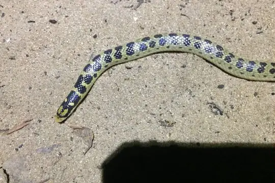

Prosymnidae
The family Prosymnidae (shovel-snouted snakes) has 18 species in SnakeList (none venomous), in 1 genus.
- 18species
- 18non-venomous
- 1genus
About the family
The shovel-snouted snakes of Africa (genus Prosymna), named for their broad, shovel-like snout. They were formerly placed in the Lamprophiidae.[1]
Sources for this introduction
- Lamprophiidae (former subfamilies). Wikipedia.
Information last reviewed 9 November 2026.
Species
Showing 18 species
 Angola Shovel-snoutProsymna angolensis
Angola Shovel-snoutProsymna angolensis Angolan Shovel-snoutProsymna ambigua
Angolan Shovel-snoutProsymna ambigua Banded Shovel-snoutProsymna semifasciata
Banded Shovel-snoutProsymna semifasciata East African Shovel-snoutProsymna stuhlmanni
East African Shovel-snoutProsymna stuhlmanni Ghana Shovel-snoutProsymna meleagris
Ghana Shovel-snoutProsymna meleagris Lined Shovel-snoutProsymna lineata
Lined Shovel-snoutProsymna lineata
Mozambique Shovel-snoutProsymna janii Multi-scaled Shovel-snoutProsymna pitmani
Multi-scaled Shovel-snoutProsymna pitmani Ogaden Racer (somalica)Prosymna somalica
Ogaden Racer (somalica)Prosymna somalica- No photo yetOrnate Shovel-snoutProsymna ornatissima
- No photo yetPlain Shovel-snout Snake (confusa)Prosymna confusa
- No photo yetPlain Shovel-snout Snake (lisima)Prosymna lisima
 Ruspoli's Shovelsnout SnakeProsymna ruspolii
Ruspoli's Shovelsnout SnakeProsymna ruspolii Southern Sahel Speckled Shovel-snoutProsymna greigerti
Southern Sahel Speckled Shovel-snoutProsymna greigerti Southern Shovel-snoutProsymna sundevalli
Southern Shovel-snoutProsymna sundevalli Southwestern Shovel-snoutProsymna frontalis
Southwestern Shovel-snoutProsymna frontalis Two-striped Shovel-snoutProsymna bivittata
Two-striped Shovel-snoutProsymna bivittata Visser's Shovel-snoutProsymna visseri
Visser's Shovel-snoutProsymna visseri
No snakes in Prosymnidae match.
About the family Prosymnidae
- Genera: Prosymna 18.